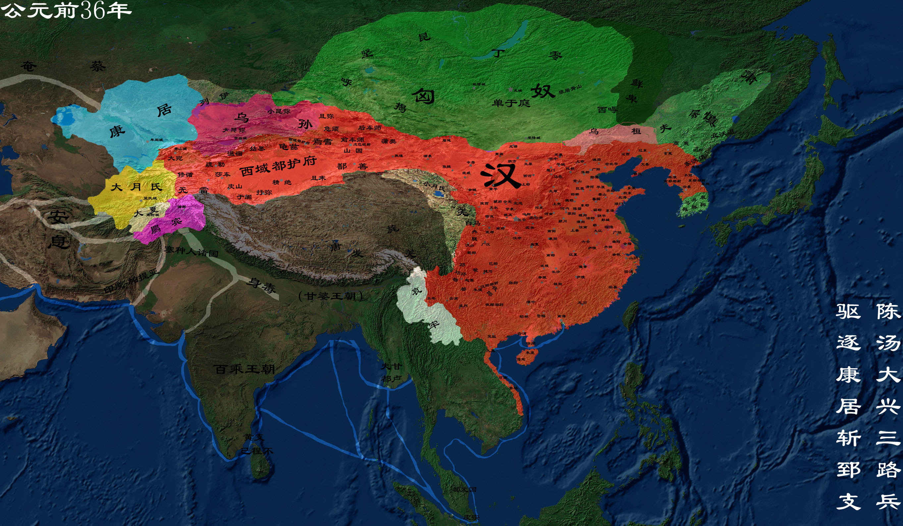

汉朝
汉朝（前202—8年，25—220年），分为西汉和东汉，是继秦朝之后的大一统王朝，共29位皇帝，享国405年。 汉朝和约略同时期欧洲的罗马帝国并列为当时世界上最先进的文明及强大帝国。 公元二年，在籍人口为59594978人，占当时世界的三分之一。
【相关人物】
[刘邦]
[项羽]
[萧何]
[韩信]
.......
[更多人物]
【相关书籍】
[最真实的汉朝]
[大汉雄风]
[大汉王朝之刘家天下]
.......
[更多书籍]

公元前202年 西汉建立
公元前202年，刘邦即皇帝位，是为汉高祖，西汉（公元前202年—公元8年）是中国历史上的大一统王朝， 共历十二帝，享国二百一十年，又称为前汉。秦末天下揭竿而起，经过楚汉之争，刘邦击败项羽，公元前 202年刘邦在山东定陶称帝，国号汉，暂都洛阳，三个月后定都长安。西汉诸多制度上承袭秦制，汉初实行 轻徭薄赋、休养生息的国策，社会经济迅速恢复。。
公元前154年 七国之乱
七国之乱是发生在中国西汉景帝时期的一次诸侯国叛乱。汉景帝即位后，御史大夫晁错提议削弱诸侯王势力、加强中央集权。 景帝三年（前154），汉景帝采用晁错的《削藩策》，先后下诏削夺楚、赵等诸侯国的封地。这时吴王刘濞就联合楚王刘戊、 赵王刘遂、济南王刘辟光、淄川王刘贤、胶西王刘昂、胶东王刘雄渠等刘姓宗室诸侯王，以“清君侧”为名发动叛乱。由于 梁国的坚守和汉将周亚夫所率汉军的进击，叛乱在三个月内被平定。
公元前139年 张骞出使西域
张骞出使西域又称张骞通西域，指的是汉武帝时期希望联合月氏夹击匈奴，派遣张骞出使西域各国的历史事件张骞出 使西域本为贯彻汉武帝联合大月氏抗击匈奴之战略意图，但出使西域后汉夷文化交往频繁，中原文明通过“丝绸之路 ”迅速向四周传播。因而，张骞出使西域这一历史事件便具有特殊的历史意义。张骞对开辟从中国通往西域的丝绸之 路有卓越贡献，至今举世称道。
公元前127年 卫青北击匈奴
卫青（？—公元前106年）。西汉时期名将、外戚、军事家，汉武帝第二任皇后卫子夫的弟弟，汉武帝在位 时官至大司马大将军，封长平侯。卫青的首次出征是奇袭龙城，揭开汉匈战争反败为胜的序幕，曾七战七捷， 收复河朔、河套地区，击破单于，为北部疆域的开拓做出重大贡献。卫青善于以战养战，用兵敢于深入 ， 为将号令严明，对将士爱护有恩，对同僚大度有礼，位极人臣而不立私威。
公元前121年 霍去病北击匈奴
霍去病（公元前140年—公元前117年），汉族，河东平阳（今山西省临汾西南）人 ，西汉中期名将、军事家、 外戚，是我国历史上著名的民族英雄。官至大司马骠骑将军，封冠军侯。 汉武帝皇后卫子夫和大将军卫青的外甥，权臣霍光异母兄。霍去病用兵灵活、注重方略、不拘古法、善于长途奔袭、 快速突袭和大迂回、大穿插、歼灭战。
公元8年 王莽篡位立新
公元6年，王莽改年号为居摄元年。三月，王莽立年仅两岁的刘婴为皇太子，号称“孺子婴”，以效仿周公摄政旧事， 为代汉做准备。此后数年间，关于王莽代汉称帝的符命图谶频繁出现。公元8年（居摄三年），梓潼人哀章制作铜匮， 内藏《天帝行玺金匮图》与《赤帝行玺某传予黄帝金策书》，伪托汉高祖遗命，令王莽称帝。于是王莽便到高帝祠 庙接受铜匮，然后戴上王冠觐见太皇太后，坐在未央宫前殿，即天子位，定国号为“新”。至此，西汉灭亡，王莽 达到了他的托古改制、篡汉自立的政治野心。
公元23年 昆阳大战
昆阳之战是新朝末年，新汉两军在中原地区进行的一场战略决战，这场大战的主战场在昆阳一线（今河南省叶县）， 故称为昆阳之战。昆阳之战是中国历史上著名的以少胜多的战例之一，它决定了新汉两军的命运和未来中原王朝 数百年的国运，是中国历史上一次有深远影响的战略决战。昆阳之战中，身为偏将军的刘秀一战而天下闻名，昆 阳之战不但是刘秀击败王莽的关键一战，同时也为刘秀日后夺取天下奠定了基础，明代著名思想家顾炎武曾这样 赞扬昆阳之战中的刘秀：“一战摧大敌，顿使何宇平”。
公元25年 刘秀立东汉
东汉（25年—220年）是中国历史上继西汉之后又一个大一统的中原王朝，传八世共十四帝，享国一百九十五年，与西汉统称汉朝。 新朝末年爆发绿林赤眉起义，汉朝宗室刘秀趁势而起。公元25年，刘秀称帝，定都雒阳（今河南洛阳），延续“汉”的 国号，史称光武中兴。东汉时，三公权力被大幅削弱，尚书台权力得到提升。汉明帝、汉章帝在位期间，东汉王 朝进入鼎盛时期，史称明章之治。汉章帝后期，外戚日益跋扈。汉和帝继位以后，扫灭外戚，使东汉国力达到极盛， 史称之为永元之隆。
公元73年 班超出使西域
班超出使西域是一个历史上的事件，班超在西域30年，对巩固我国西部疆域，促进多民族国家的发展做出了卓越贡献。同时，东汉恢复对西域的统治，保卫了“丝绸之路”，促进了中国和中西亚各国的经济文化交流。 汉明帝初年，北匈奴一再胁迫西域各国出兵，寇掠东汉的河西等地。永平十六年(73年)，明帝派遣班超出使西域，镇抚西域各国，西域与汉断绝65年的关系至此恢复。直到永元十四年(102年)，班超才从西域返回洛阳。
公元100年前后 《九章算术》
《九章算术》内容十分丰富，全书总结了战国、秦、汉时期的数学成就。同时，《九章算术》在数学上还有其独到的成就， 不仅最早提到分数问题，也首先记录了盈不足等问题，《方程》章还在世界数学史上首次阐述了负数及其加减运算法则。 它是一本综合性的历史著作，是当时世界上最简练有效的应用数学，它的出现标志中国古代数学形成了完整的体系。
公元190年 群雄割据（董卓挟帝迁都长安）
董卓之乱，指东汉中平六年（189年）至初平三年（192年）董卓入朝后实行的专权暴政。中平六年，董卓奉诏率兵 进入洛阳，废汉少帝，立陈留王刘协为帝，自为相国，独揽朝政。次年关东诸侯推袁绍为盟主，讨伐董卓，卓败，挟 持汉献帝刘协西走长安，并驱使洛阳数百万人口西迁长安。行前，董卓士卒大肆烧掠，洛阳周围二百里内尽成瓦砾。 初平三年，董卓被王允、吕布所杀。
公元197年 袁术称帝（汉末，进入三国时期）
袁术称帝是指东汉末年，军阀袁术在淮南地区称帝事件。袁术是袁绍之弟（《魏书》称袁术为袁绍异母弟， 《三国志》称二人为从兄弟），汉末群雄之一，割据淮南，不久称帝，建号仲氏（又称仲家）。